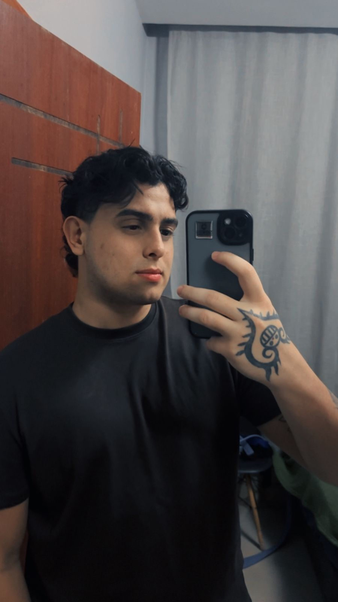

— OLÁ
Estudante de Ciência da Computação apaixonado por tecnologia, segurança digital e desenvolvimento contínuo.
VER CURRÍCULO BAIXAR CV
Meu nome é Vinícius Padula e sou estudante de Ciência da Computação. Sempre fui curioso sobre tecnologia e como os sistemas funcionam, o que me levou a explorar diferentes áreas da computação.
Atualmente estudo na Universidade Veiga de Almeida (UVA), onde venho desenvolvendo conhecimentos em programação, análise de dados e fundamentos de sistemas computacionais.
Descobri meu interesse por cibersegurança através de projetos da faculdade, onde comecei a entender como proteger sistemas e analisar vulnerabilidades.
Gosto muito de jogos RPG, pois envolvem estratégia, evolução e raciocínio lógico, habilidades que também aplico na área de tecnologia.
Meu objetivo é me tornar Analista SOC e crescer na área de cibersegurança, sempre buscando aprender novas ferramentas e técnicas.